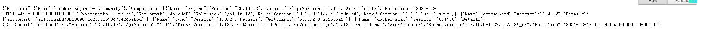
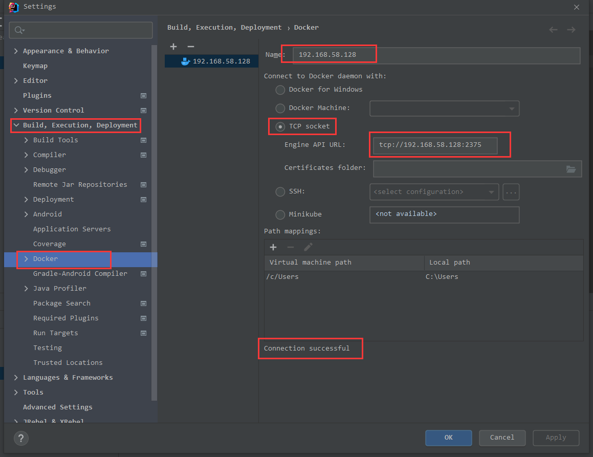
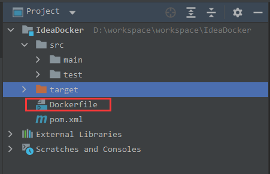
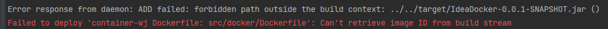
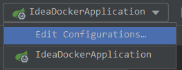
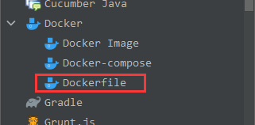
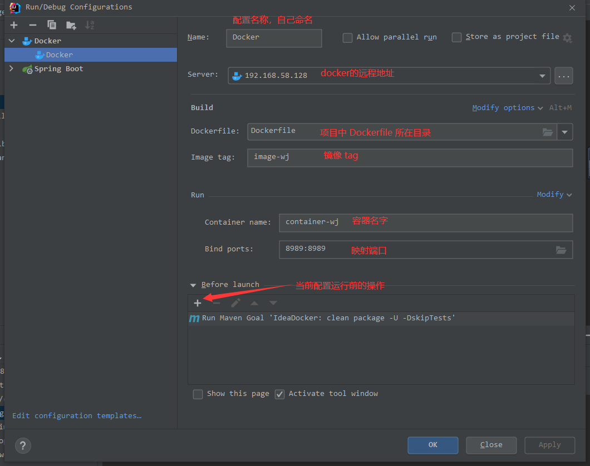
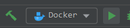
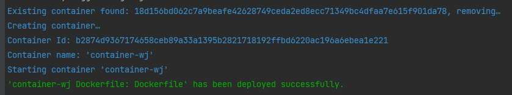

IDEA 集成 Docker 的快捷部署 第一步：配置Docker 远程访问 1、修改配置文件 2、替换 ExecStart 1 2 3 4 ExecStart=/usr/bin/dockerd -H fd:// --containerd=/run/containerd/containerd.sock ExecStart=/usr/bin/dockerd -H tcp://tcp://0.0.0.0:2375 -H unix://var/run/docker.sock --containerd=/run/containerd/containerd.sock
重启docker 服务：
1 2 3 4 5 [root@localhost ~] [root@localhost ~] [root@localhost ~] root 60578 1 1 21:57 ? 00:00:00 /usr/bin/dockerd -H tcp://tcp://0.0.0.0:2375 -H unix://var/run/docker.sock --containerd=/run/containerd/containerd.sock root 60756 57349 0 21:58 pts/0 00:00:00 grep --color=auto docker
3、将2375添加到防火墙 1 2 3 4 firewa11-cmd --add-port=2375/tcp --permanent firewa11-cmd --reload firewal1-cmd --zone=public --1ist-ports
4、检查是否配置成功 访问docker主机端口：http://192.168.58.128:2375/version

第二步、IDEA配置 1、IDEA 安装插件，配置docker

2、写一个简单的控制器 1 2 3 4 5 6 7 8 9 10 11 12 13 14 15 @RestController public class HelloController { @RequestMapping("/getidea") public String helloIDEA () { String s = LocalDateTime.now().format(DateTimeFormatter.ofPattern("yyyy-MM-dd HH:mm:ss" )); return "hello IDEA,当前时间" +s; } @RequestMapping("/getdocker") public String helloDocker () { String s = LocalDateTime.now().format(DateTimeFormatter.ofPattern("yyyy-MM-dd HH:mm:ss" )); return "hello docker,当前时间" +s; } }
3、创建Dockerfile文件

注意Dockerfile文件存放的目录，否则会出现以下问题：
1、jar 文件找不到
idea 启动用dockerfile部署出现：Failed to deploy ‘vhr-front Dockerfile: Dockerfile’: Not connected to docker。
2、Dockerfile文件的位置不对

因为 ADD ../../../target/config-service-0.0.1-SNAPSHOT.jar config-service.jar
不能向上获取父目录,所以报错了;解决办法就是把Dockerfile 放到父目录或者根目录。
Dockerfile 内容
1 2 3 4 5 6 7 8 9 10 11 12 13 14 15 16 17 18 19 20 FROM openjdk:8 MAINTAINER wangjianENV LANG=C.UTF-8 LC_ALL=C.UTF-8 VOLUME /tmp ADD target/IdeaDocker-0.0.1-SNAPSHOT.jar app.jar ENTRYPOINT ["java" ,"-jar" ,"/app.jar" ] EXPOSE 8989
4、添加Docker启动项 （1）编辑启动项配置

（2）添加Dockerfile启动项

（3）修改Dockerfile属性

5、 运行Dockerfile


Docker上部署镜像成功，并启动容器成功！
第三步、检查 1、查看镜像 1 2 3 4 5 [root@localhost ~] REPOSITORY TAG IMAGE ID CREATED SIZE image-wj latest 65cf034ffdea About a minute ago 544MB openjdk 8 e24ac15e052e 3 months ago 526MB
2、查看容器 1 2 3 [root@localhost ~] CONTAINER ID IMAGE COMMAND CREATED STATUS PORTS NAMES b2874d936717 65cf034ffdea "java -jar /app.jar" 2 minutes ago Up 2 minutes 0.0.0.0:8989->8989/tcp, :::8989->8989/tcp container-wj
第四步、验证
 微信
微信 支付宝
支付宝